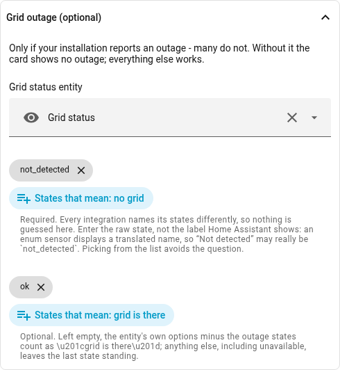
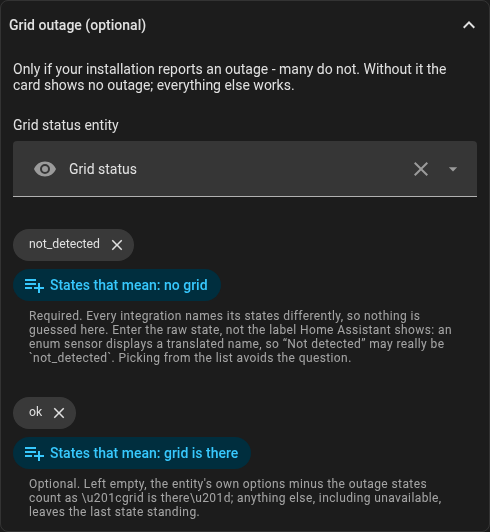

entities:
grid_status:
entity: sensor.grid_status
outage: [not_detected]
ok: [ok]Grid outage
Some installations report whether the grid is there at all — an inverter that can run an island usually does. Then the card can say so, instead of showing 0 W, which looks exactly like a quiet minute with nothing flowing:
In the editor: Grid outage (optional). It offers the entity’s own states to pick from:


outage is required, and nothing about it is guessed: every integration names
its states differently, and a default taken from one vendor would be wrong more
often than right. A bare entity id without state names is ignored, with a note
in the console. ok may be left out when the entity publishes its own
options — enum sensors and input_select do — because then everything in
options except the outage states means "grid is there".
Give the raw states, not the labels Home Assistant displays: an enum sensor
shows a translated name, so what reads Not detected on screen is
not_detected underneath. Case and stray spaces do not matter, a translation
does — which is why the editor offers the entity’s own values for picking.
During an outage the grid node carries a red X over its icon and reads no grid instead of a figure, and a red strip appears above the cross. Tapping the node opens the status entity, since that is the one that says since when.
Everything else keeps the last state. unavailable, unknown and any state
you did not list leave the outage as it was. That is deliberate: an outage often
takes the connection with it, and an integration may keep serving its last known
value for minutes before it gives up. A card that read silence as "the grid is
back" would drop the outage exactly when it is real.
On load the card asks the recorder for the last real state of the past ten days, so a page opened during an outage starts with the outage. If it finds nothing, it claims nothing and draws the grid as usual.
Without grid_status none of this exists — no strip, no X, no extra query.